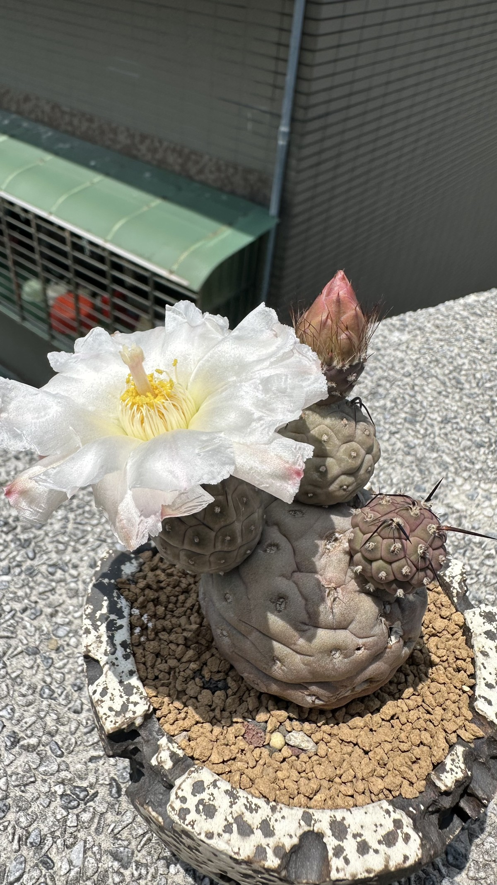

習字野仙人掌
Tephrocactus geometricus

一、原產地的生活模式
產地：阿根廷卡塔馬卡省（Catamarca）與玻利維亞邊境，海拔 2200–2900 公尺。生長在紫紅色礫岩與砂質土壤之間，幾乎沒有任何遮蔽，完全暴露在高強度日照下。
日照
原產地全年強烈直射日照，日照時數至少 8 小時。台灣北部夏季可對應，冬季日照不足是養護的主要挑戰——光不夠，莖節就容易徒長、失去緊緻的幾何感。
雨量（具象化）
卡塔馬卡屬極端乾旱氣候，全年雨量極少且集中：
| 季節 | 月份 | 雨量 | 具象化 |
|---|---|---|---|
| 生長季 | 春末 – 夏 | 偶有短暫降雨 | 像台灣的零星雷陣雨，來了就走，地面快速乾透 |
| 休眠季 | 秋 – 冬 | 幾乎 0 mm | 完全不下雨，靠莖節儲水撐過 |
台灣養護邏輯：氣溫高、日照強 → 可正常澆水；氣溫下降、陰雨連綿 → 立刻控水。這株植物在原產地習慣的是「快速乾透」的節奏，不是慢慢保濕。
根系特性
習字野仙人掌為鬚根系——從莖節基部長出細根向四面擴散，沒有明顯的主根。用扦插繁殖的個體尤其如此，主根通常不發育。
莖節本身就是儲水器官，肥厚的球節在乾季扮演水庫的角色。選盆建議：淺盆 + 高比例砂質或浮石介質，排水必須極快，盆底絕對不能積水。
二、怎麼把它養死
以下任何一條都能有效殺死這株植物：
- 介質保水太強 — 用泥炭為主的介質，澆水後幾天還是濕的，根系在濕熱環境下快速腐爛
- 氣溫下降還繼續澆水 — 秋冬台灣涼下來時，它進入半休眠，此時給水直接爛根
- 低溫 + 潮濕同時出現 — 低於 10°C 時介質還是濕的，爛根速度加倍，幾乎無法救回
- 陽光不足 — 光線不夠，莖節開始徒長、變形，失去幾何感，植株虛弱
- 換盆後立刻澆水 — 傷根後需要等一週讓傷口癒合，立刻給水容易從傷口感染腐爛
- 莖節碰撞脫落後直接種回 — 節間連接非常脆弱，脫落的莖節要先晾乾癒合再扦插，否則爛掉
反過來看：介質要乾得快、涼了就控水、放在日照最強的位置、換盆後等一週再澆第一次水。
三、我的植物成長歷程
2026 / 03 — 入手 + 換盆
入手後評估原介質保水性偏高，決定換盆，改為高排水配比的砂質介質。換盆後靜置一週再給第一次水。
2026 / 05 / 30 — 開花中，狀況良好
目前正值開花期，花朵白色帶淡粉紅色條紋，花期僅一天。莖節維持藍綠色，頂樓全日照環境下生長緊緻，幾何感明顯。
四、突發狀況備忘錄
| 時間 | 發生什麼 | 處理方式 | 結果 |
|---|---|---|---|
| 目前無紀錄 | |||